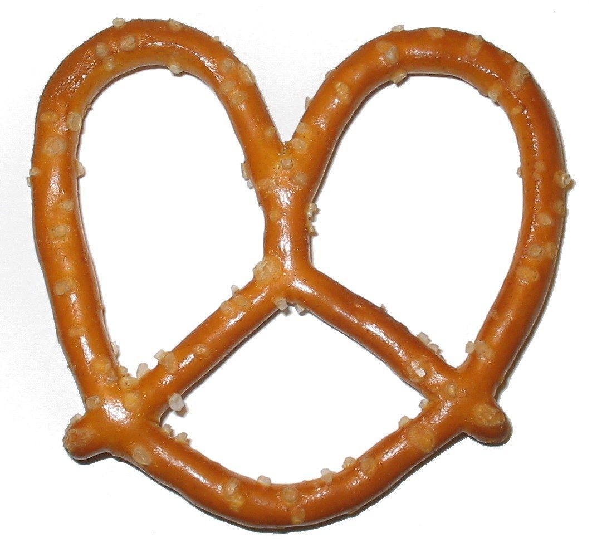
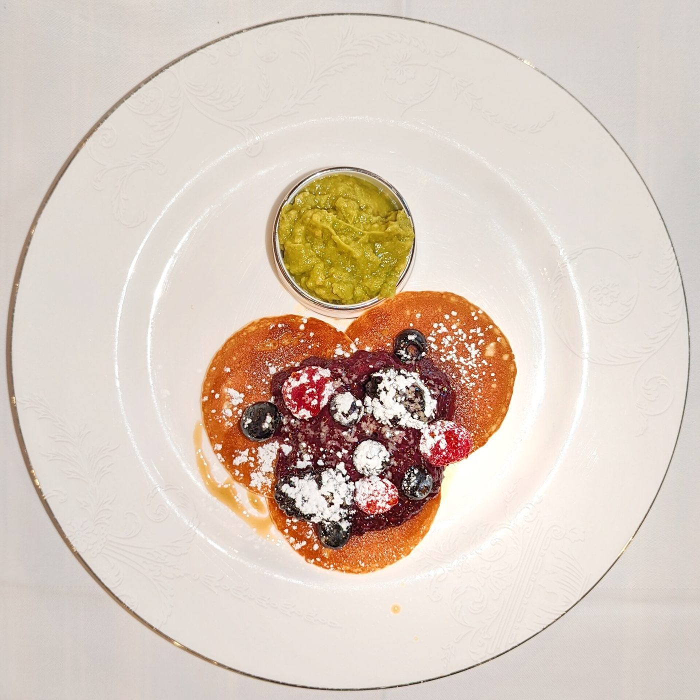
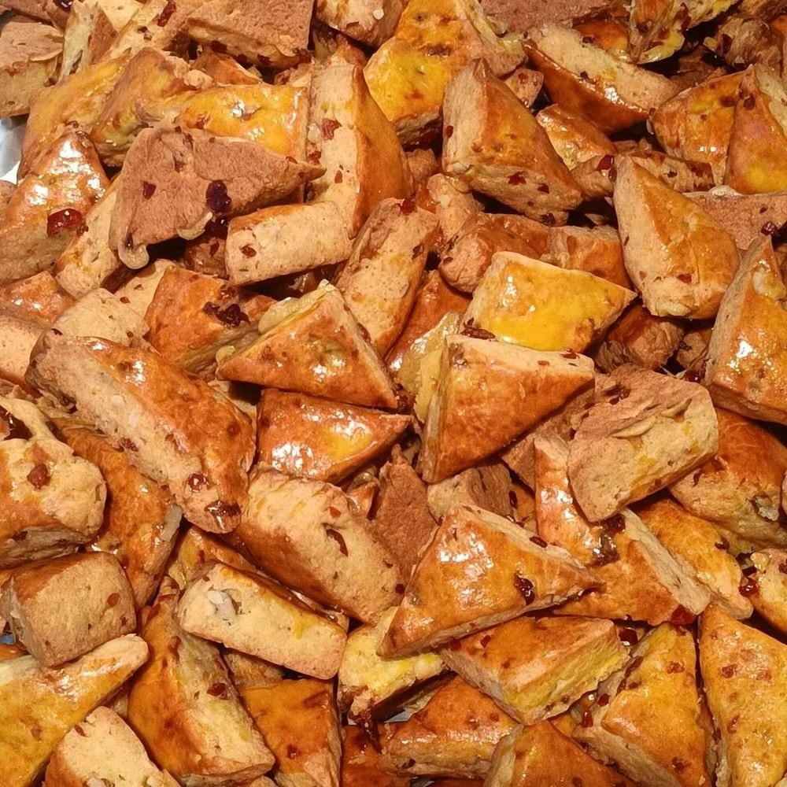
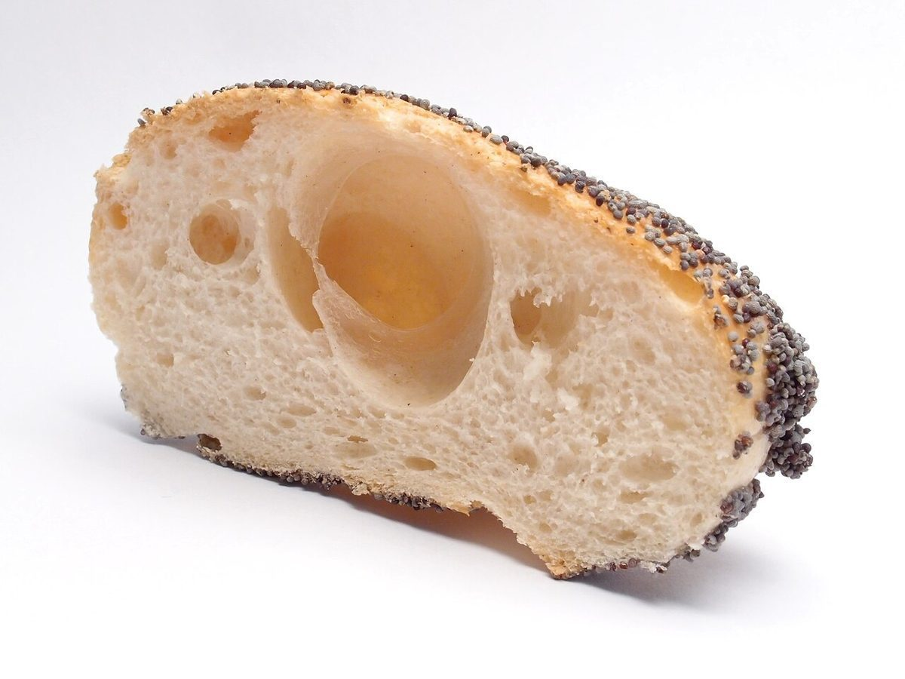
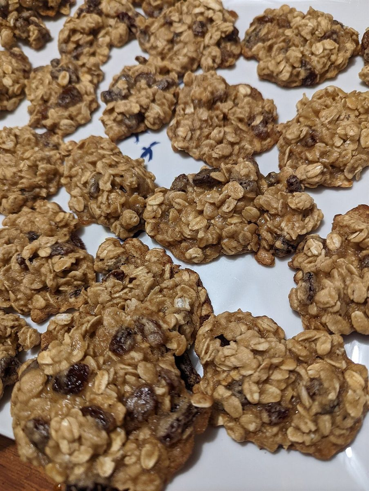
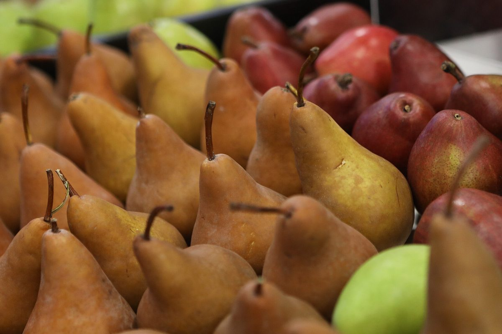

メニュー
メニューは準備中
商品や価格は確認でき次第、ご案内します。ここに並ぶ写真は、ページの見た目を伝えるためのイメージです。
写真イメージ
写真(イメージ)






写真はイメージです。お店で提供している商品を写したものではありません。
メニュー
商品や価格は確認でき次第、ご案内します。ここに並ぶ写真は、ページの見た目を伝えるためのイメージです。
写真イメージ






写真はイメージです。お店で提供している商品を写したものではありません。